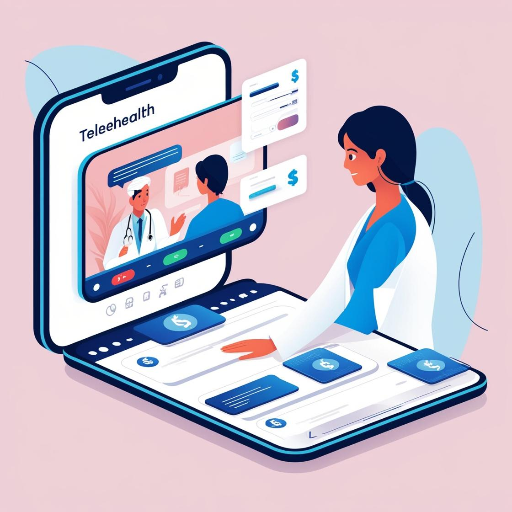

Part Three
Conclusion: The Potential of Telehealth Cost Savings
The results demonstrate that "state health and hospital spend per capita" is a critical factor in determining the financial benefits of the ETHAN telehealth system. Across the 31 states analyzed, the projected savings totaled $11.5 billion, accounting for 4.9% of total health and hospital expenditures in 2024. Expanding similar health technology systems nationwide could further enhance cost savings and improve access to care.
Implementation Challenges
While the cost of implementing telehealth programs varies between $15,000 and $50,000+, the long-term financial benefits are substantial. The study estimates that savings to EMS providers alone could offset initial implementation costs, potentially reaching $570,000 per provider.b>
Policy Implications
Final Thoughts
Telehealth has the potential to transform healthcare by making services more accessible and reducing costs for both patients and providers. The cost savings realized through programs like ETHAN could be reinvested into other healthcare innovations, creating a positive feedback loop of efficiency and affordability. By leveraging smart technology, we can build a more sustainable and cost-effective healthcare system for the future.
For more on this topic check out my Blog Post, “Harnessing Technology To Build A Healthier Future!”
References
- Langabeer, James & Champagne-Langabeer, Tiffany & Alqusairi, Diaa & Kim, Junghyun & Jackson, Adria & Persse, David & Gonzalez, Michael. (2016). Cost-benefit analysis of telehealth in pre-hospital care. Journal of Telemedicine and Telecare. 23. 10.1177/1357633X16680541.
- Mojtahedi Z, Guo Y, Kim P, Khawari P, Ephrem H, Shen JJ. Mental Health Conditions- and Substance Use-Associated Emergency Department Visits during the COVID-19 Pandemic in Nevada, USA. Int J Environ Res Public Health. 2023;20(5):4389. Published 2023 Mar 1. doi:10.3390/ijerph20054389